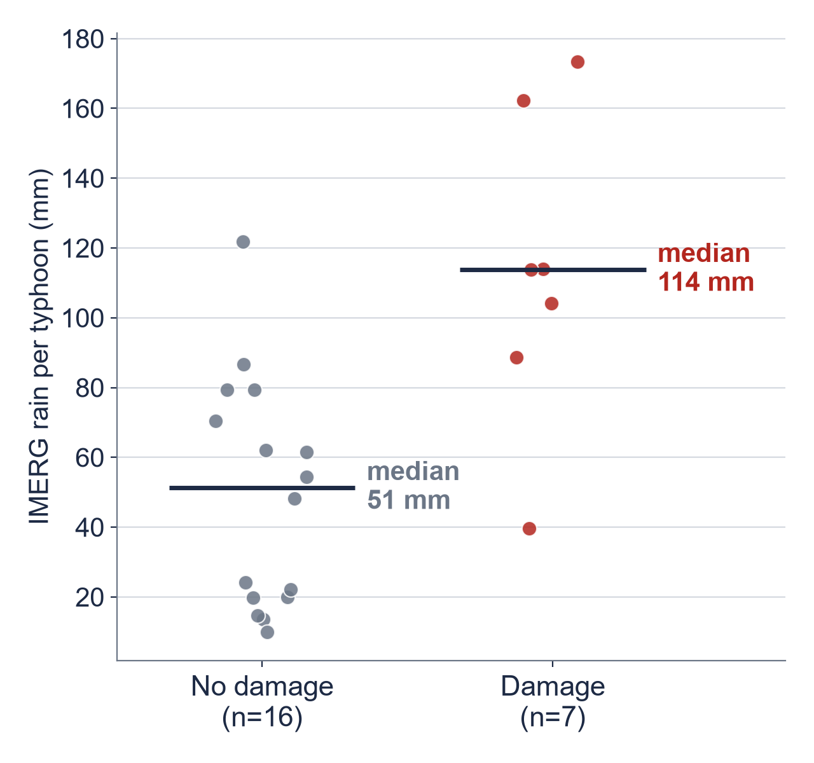
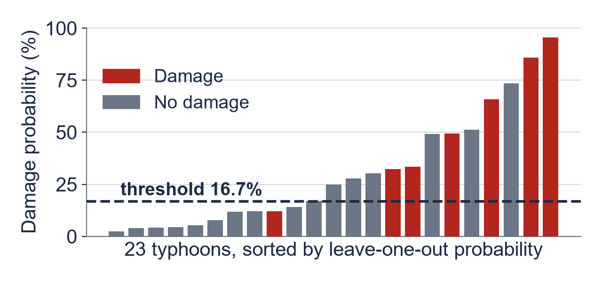
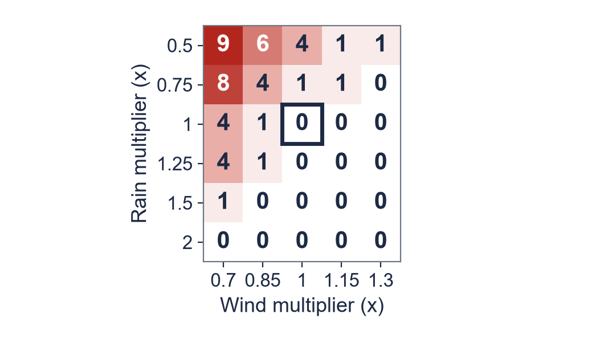
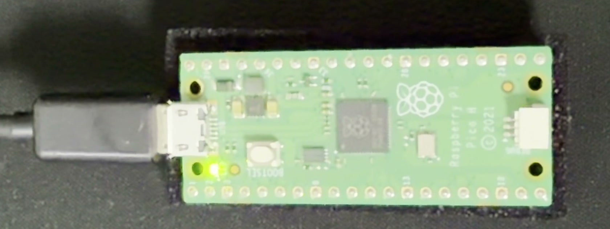
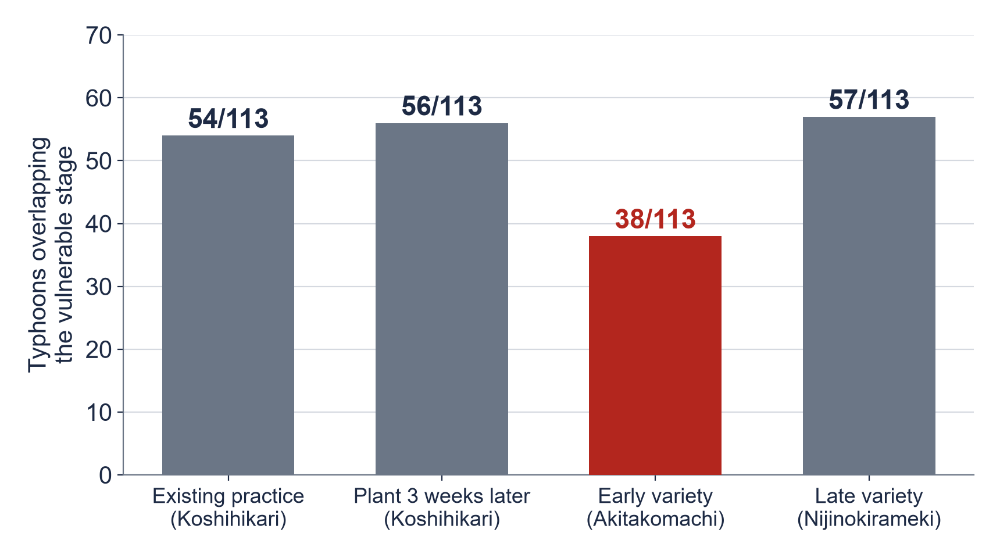

| Source | Variable and role | Detail |
|---|---|---|
| NASA GPM IMERG daily, V07 | Rain already fallen | 0.1° grid; main training input |
| NASA POWER | T2M temperature → accumulated temperature after heading; WS10M_MAX wind | Daily point data |
| NASA GEOS-FP | Forecast rain and wind, next 48 h | 0.25° grid |
| Reference: MAFF disaster statistics | Paddy damage per typhoon (the answer key) | Comparison: JMA AMeDAS |

| Variable | Median: damage / none | p-value |
|---|---|---|
| IMERG rain | 114 / 51 mm | 0.001 |
| POWER rain | 121 / 54 mm | 0.001 |
| POWER wind | 11.7 / 11.2 m/s | 0.15 (no diff.) |
| AMeDAS max gust | 27.2 / 18.5 m/s | 0.001 |
| Check | Missed | Safe to wait |
|---|---|---|
| In-sample | 0 / 7 | 10 / 16 |
| Leave-one-out | 1 / 7 | 8 / 16 |
| No-damage typhoon | IMERG rain | Accum. temp. |
|---|---|---|
| 2006 No.7 | 79 mm | 238 °C |
| 2009 No.9 | 87 mm | 364 °C |
| 2021 No.10 | 122 mm | 332 °C |
| Actual | Harvest now | Safe to wait |
|---|---|---|
| Damage (7) | 6 | 1 missed |
| No damage (16) | 6 | 10 |


茨城,0,40,10,750 → harvest now, 20.1% vs 16.7%); no GPU, no cloud, no lock-in. Verified: PC ~2 µs; IoT device 0.6-1.2 ms, 23/23 same decisions as PC; browser demo 33/33.
| Strategy (all rice) | Overlapping typhoons |
|---|---|
| Existing practice (Koshihikari) | 54 / 113 |
| Plant 3 weeks later (Koshihikari) | 56 / 113 |
| Early variety (Akitakomachi) | 38 / 113 |
| Late variety (Nijinokirameki) | 57 / 113 |

| Runs on GEOS-FP forecast data | Confirmed |
| Pico decisions = PC decisions | 23 / 23 |
| Forecast error | Sensitivity test only |
| Archived-forecast validation | Not done |
| Other regions / crops | Not tested |